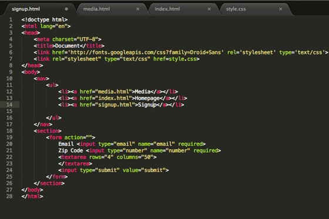
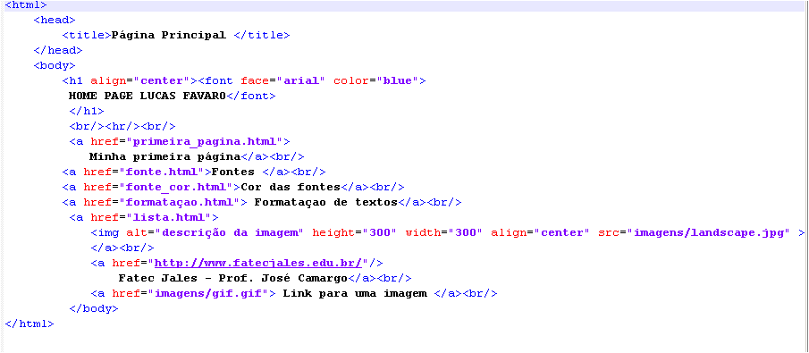

Padrões de Projetos de Sítios Internet I
Aula ministrada pelo Professor Mestre Alexandre Aparecido Bernardes, nessa matéria estudamos os fundamentos do HTML (HypertextMarkupLanguage) com ênfase na semântica do uso dos elementos e nos benefícios do emprego de padrões de codificação.
Demonstrar uso do CSS (CascadingStyleSheets) para separar conteúdo e apresentação, de modo a aumentar velocidade do desenvolvimento e as habilidades de design. Os estudantes deverão ser capazes de: construir páginas Web por meio do HTML e validá-las no validador do W3C, quando for ocaso.
Empregar o CSS para todas as apresentações. Criar uma estrutura de diretórios adequada para sítios Internet visando a facilidade de manutenção. Saber empregar FTP para transferir arquivos para o servidor. Construir formulários. Empregar um script fornecido. Criar um sítio completo com várias páginas com todos os elementos de design, HTML e CSS estudados no curso.
O HTML é uma linguagem de marcação para produzir páginas Web. Ele sofreu várias mudanças para que pudesse acompanhar a evolução da web. Sua estrutura é composta por etiquetas (tags), dessa forma <"tag"> texto <"/tag">. O HTML5 é o atual, ele trouxe elementos que definem setores principais do documento como header, nav, section, article, footer e outros. Com isso os buscadores conseguem vasculhar o código mais facilmente. Com o HTML5 veio também a semântica que é o uso dos códigos para o que ele realmente foi criado.
O css (Cascading style sheets) é uma linguagem de estilo utilizada para definir a apresentação de documentos escritos em uma linguagem de marcação, como HTML ou XML. Seu principal benefício e prover a separação entre o formato e o conteúdo de um documento.
 